４日目(9/7)～氷河の山、ロブソン～
Mt.Robson
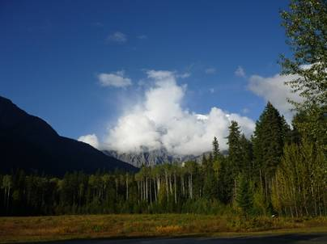
朝起きると澄んだ青空が待っていた。残念ながらまだロブソン山は雲に隠れてしまってはいるが、これから僕らを迎えてくれるだろう絶景を想像すると期待で胸が膨らむ。
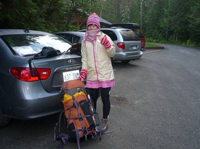
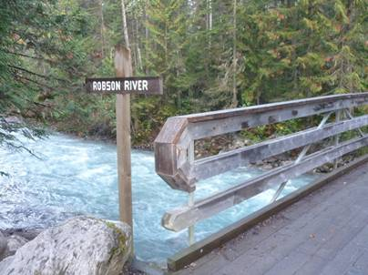
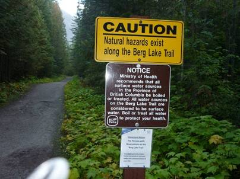
入山地点はBerg Lake Trailhead。ここから約20kmの長い道のりだ。Robson川の橋を渡ればうっそうと茂る針葉樹林の中のトレイルが始まる。もうここは、ヒグマの生息地だ。
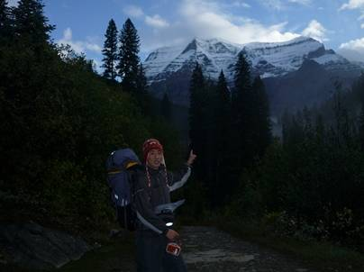
しばらく歩くと雲が晴れ、ロブソンの全貌が明らかになってきた。なんという神々しい山肌だろう。どこから取り付くかも想像できないが、毎年腕に自身のあるアルピニストがその頂を目指す舞台ともなっている。もちろん僕らにピークを目指す能力は無い。Berg Lakeというロブソンの北側にある氷河の雪解け水が作ったエメラルドグリーンの湖が目的地だ。ちょうどロブソンの西を巻いて裏側に回りこむようなトレイルだ。
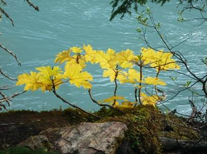
カナダの国旗にもなっているカエデ(Maple)の葉。もう黄色く色づいている。昨晩寝る前や、今朝起きたときはかなり冷え込んでいた。もうここには秋が訪れているようだ。
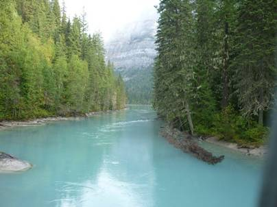
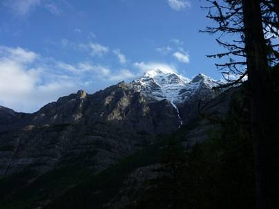
ロブソンの西側にはBerg Lakeから流れてくる川がある。水は透き通っては無いが、きれいなエメラルドグリーンだった。
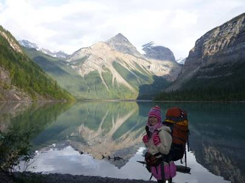
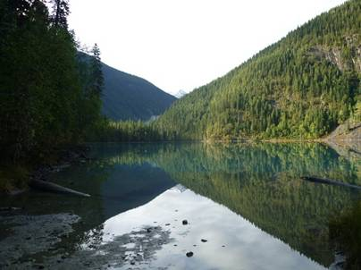
登山口から2時間ほど歩いたところにあるKeneyLake。そこには絶景が待ち構えていた。無風に近く、怖いほど静まり返った湖面には長い年月をかけ、氷河によって侵食された急峻な山々が映っていた。マリンブルー、あるいはエメラルドグリーンの湖はその静けさのあまり、湖と言うよりは大きな鏡が地面に置いてあるかのようだった。ちなみに登山口からここまで、誰一人として登山客とはすれ違っていない。僕らが出会ったのはカナディアンロッキーの小さな住人、リス達だ。カナダのリスはあまり人を恐れることはないとガイドブックに書かれていたが、本当にそのとおりでトレイルの両脇からしょっちゅう顔を出して僕らを喜ばせてくれた。
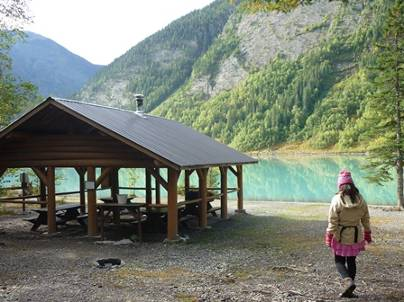
ここは湖のほとりにあるキャンプ場の一角にある休憩所だ。ここで何人かの登山客が下山してきた。あまり人でごった返している登山はあまり好きなほうではないけれど、全く人がいないのもそれそれで怖い。やっと人とすれ違えたので安心した。
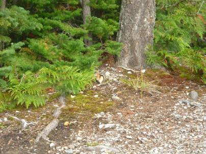
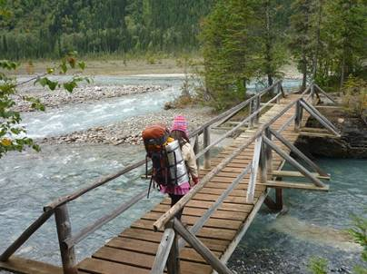
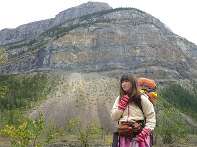
Keney湖からさらに北を目指して歩いていく。上の一番左の写真中央には、かわいいシマリスが写っている。
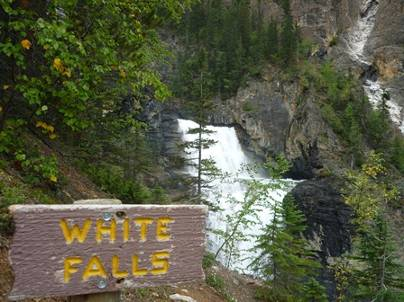
この行程は最近運動不足気味の僕らには少しきつかった。目的地はBerg湖だったが、3つの滝を超えたところにあるキャンプ場でサイトをすることにした。
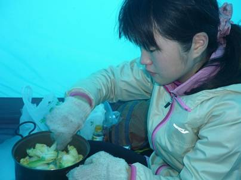
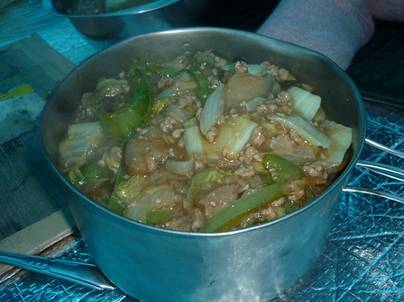
今日の晩ごはんは和風あんかけ丼。まおが日本でレシピを考えてくれたものだ。食材は日本から持ってきたものと、現地購入したものがある。野菜の値段は日本とあまり変わらなかった気がするが、肉の値段は恐ろしく安い。脂肪を蓄えるのにはぴったりだ。
夜の冷え込みは相当厳しく、まおは風邪をひいてしまったようだ。明日これ以上進むのはきついので、引き返すことにした。